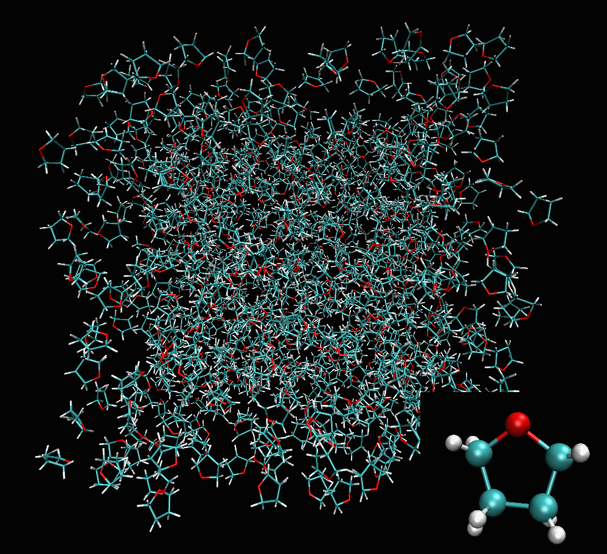
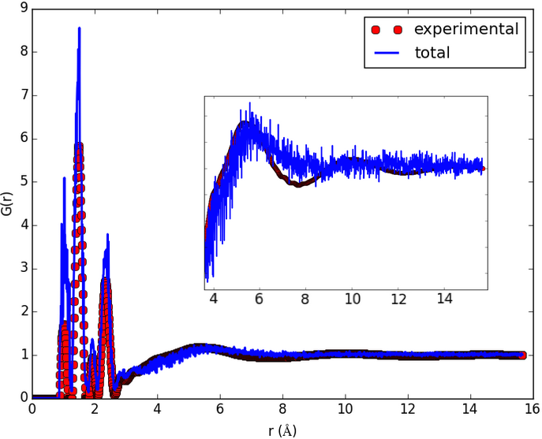
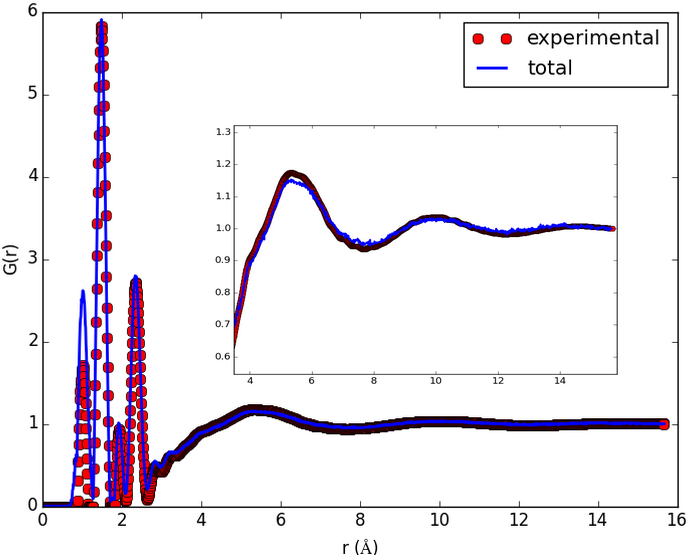

![Inheritance diagram of fullrmc.Selectors.RandomSelectors, fullrmc.Selectors.OrderedSelectors, fullrmc.Generators.Translations, fullrmc.Generators.Rotations, fullrmc.Generators.Swaps, fullrmc.Generators.Agitations, fullrmc.Generators.Removes, fullrmc.Constraints.AtomicCoordinationConstraints, fullrmc.Constraints.DistanceConstraints, fullrmc.Constraints.BondConstraints, fullrmc.Constraints.AngleConstraints, fullrmc.Constraints.DihedralAngleConstraints, fullrmc.Constraints.ImproperAngleConstraints, fullrmc.Constraints.PairDistributionConstraints, fullrmc.Constraints.PairCorrelationConstraints, fullrmc.Constraints.StructureFactorConstraints](_images/inheritance-3b3bbd6abdab0984b62eb145c8e74407db36fe0e.png)
Molecular system full RMC simulation. Groups are set to molecules and smart moves are applied. Translations along symmetry axes, rotations about symmetry axes, etc. |
Atomic binary Nickel-Titanium shape memory alloy system phase transformation RMC simulation. Random atomic translations are enough to reproduce short range ordering. But swapping atoms is necessary to fit long range atomic correlations. |
Molecular system mere atomic RMC simulation. Covalent bond electron density polarization is modelled by allowing fullrmc to explore across energy low correlation barriers. |
Reverse Monte Carlo traditional fitting mode compared with fullrmc’s recursive selection with exploring. This video shows how from a potential point of view exploring allow to cross forbidden unlikely barriers and going out of local minimas. |
Reverse Monte Carlo (RMC) is probably best known for its applications in condensed matter physics and solid state chemistry. fullrmc which stands for FUndamental Library Language for Reverse Monte Carlo is a modelling package to solve an inverse problem whereby an atomic/molecular model is adjusted until its atoms position have the greatest consistency with a set of experimental data.
fullrmc is a python package with its core and calculation modules optimized and compiled in Cython. fullrmc is not a standard RMC package but it’s rather unique in its approach to stochastically solving an atomic or molecular structure. fullrmc’s Engine sub-module is the main module that contains the definition of ‘Engine’ which is the main and only class used to launch an RMC calculation. Engine reads only Protein Data Bank formatted atomic configuration ‘.pdb’ files and handles other definitions and attributes such as:
- Group: Engine doesn’t understand atoms or molecules but group of atom indexes instead. A group is a set of atom indexes, allowing no indexes redundancy within the same group definition. A Group instance can contain any set of indexes and as many atom indexes as needed. Grouping atoms is essential to make clusters of atoms (residues, molecules, etc) evolve and move together. A group of a single atom index can be used to make a single atom move separately from the others. Engine’s ‘groups’ attribute is a simple list of group instances containing all the desired and defined groups that one wants to move.
- Group selector: Engine requires a GroupSelector instance which is the artist that selects a group from the engine’s groups list at every engine runtime step. Among other properties, depending on which group selector is used by the engine, a GroupSelector can allow weighting which means selecting groups more or less frequently than the others, it can also allow selection recurrence and refinement of a single group, ordered and random selection is also possible.
- Move generator: Every group instance has its own MoveGenerator. Therefore every group of atoms when selected by the engine’s group selector at the engine’s runtime can perform a customizable and different kind of moves.
- Constraint: A constraint is a rule that controls certain aspect of the configuration upon moving groups. Engine’s ‘constraints’ attribute is a list of all defined and used constraint instances, it is the judge that controls the evolution of the system by accepting or rejecting the move of a group. If engine’s constraints list is empty and contains no constraint definition, this will result in accepting all the generated moves.
## Tetrahydrofuran (THF) molecule sketch
##
## O
## H41 / \ H11
## \ / \ /
## H42-- C4 THF C1 --H12
## \ MOLECULE /
## \ /
## H31-- C3-------C2 --H21
## / \
## H32 H22
##
# ##################################################################################### #
# ############################### IMPORT WHAT IS NEEDED ############################### #
import os
import numpy as np
from fullrmc.Engine import Engine
from fullrmc.Constraints.PairDistributionConstraints import PairDistributionConstraint
from fullrmc.Constraints.DistanceConstraints import InterMolecularDistanceConstraint
from fullrmc.Constraints.BondConstraints import BondConstraint
from fullrmc.Constraints.AngleConstraints import BondsAngleConstraint
from fullrmc.Constraints.ImproperAngleConstraints import ImproperAngleConstraint
from fullrmc.Core.MoveGenerator import MoveGeneratorCollector
from fullrmc.Generators.Translations import TranslationGenerator, TranslationAlongSymmetryAxisGenerator
from fullrmc.Generators.Rotations import RotationGenerator, RotationAboutSymmetryAxisGenerator
# ##################################################################################### #
# ############################# DECLARE USEFUL VARIABLES ############################## #
pdfData = "thf_pdf.exp"
pdbStructure = "thf.pdb"
enginePath = "thf_engine.rmc"
# ##################################################################################### #
# ################################# CREATE RMC SYSTEM ################################# #
ENGINE = Engine(path=None)
# if engine is not created and saved
if not ENGINE.is_engine(enginePath)
# create and initialize engine
ENGINE = Engine(path=enginePath, freshStart=True)
ENGINE.set_pdb(pdbFileName)
# re-set structure boundary conditions
ENGINE.set_boundary_conditions(np.array([48.860,0,0, 0,48.860,0, 0,0,48.860]))
# create and add pair distribution constraint to the engine
PDF_CONSTRAINT = PairDistributionConstraint(experimentalData=pdfData, weighting="atomicNumber")
ENGINE.add_constraints([PDF_CONSTRAINT])
# create and add intermolecular distances constraint to the engine
EMD_CONSTRAINT = InterMolecularDistanceConstraint()
ENGINE.add_constraints([EMD_CONSTRAINT])
# create and add bonds constraint to the engine
B_CONSTRAINT = BondConstraint()
ENGINE.add_constraints([B_CONSTRAINT])
B_CONSTRAINT.create_bonds_by_definition( bondsDefinition={"THF": [('O' ,'C1' , 1.20, 1.70),
('O' ,'C4' , 1.20, 1.70),
('C1','C2' , 1.25, 1.90),
('C2','C3' , 1.25, 1.90),
('C3','C4' , 1.25, 1.90),
('C1','H11', 0.88, 1.16),('C1','H12', 0.88, 1.16),
('C2','H21', 0.88, 1.16),('C2','H22', 0.88, 1.16),
('C3','H31', 0.88, 1.16),('C3','H32', 0.88, 1.16),
('C4','H41', 0.88, 1.16),('C4','H42', 0.88, 1.16)] })
# create and add angles constraint to the engine
BA_CONSTRAINT = BondsAngleConstraint()
ENGINE.add_constraints([BA_CONSTRAINT])
BA_CONSTRAINT.create_angles_by_definition( anglesDefinition={"THF": [ ('O' ,'C1' ,'C4' , 105, 125),
('C1' ,'O' ,'C2' , 100, 120),
('C4' ,'O' ,'C3' , 100, 120),
('C2' ,'C1' ,'C3' , 95 , 115),
('C3' ,'C2' ,'C4' , 95 , 115),
# H-C-H angle
('C1' ,'H11','H12', 98 , 118),
('C2' ,'H21','H22', 98 , 118),
('C3' ,'H31','H32', 98 , 118),
('C4' ,'H41','H42', 98 , 118),
# H-C-O angle
('C1' ,'H11','O' , 100, 120),
('C1' ,'H12','O' , 100, 120),
('C4' ,'H41','O' , 100, 120),
('C4' ,'H42','O' , 100, 120),
# H-C-C
('C1' ,'H11','C2' , 103, 123),
('C1' ,'H12','C2' , 103, 123),
('C2' ,'H21','C1' , 103, 123),
('C2' ,'H21','C3' , 103, 123),
('C2' ,'H22','C1' , 103, 123),
('C2' ,'H22','C3' , 103, 123),
('C3' ,'H31','C2' , 103, 123),
('C3' ,'H31','C4' , 103, 123),
('C3' ,'H32','C2' , 103, 123),
('C3' ,'H32','C4' , 103, 123),
('C4' ,'H41','C3' , 103, 123),
('C4' ,'H42','C3' , 103, 123) ] })
# create and add improper angles constraint to the engine keeping THF molecules' atoms in the plane
IA_CONSTRAINT = ImproperAngleConstraint()
ENGINE.add_constraints([IA_CONSTRAINT])
IA_CONSTRAINT.create_angles_by_definition( anglesDefinition={"THF": [ ('C2','O','C1','C4', -15, 15),
('C3','O','C1','C4', -15, 15) ] })
# initialize constraints data
ENGINE.initialize_used_constraints()
# save engine
ENGINE.save()
# if engine is created and saved, it can be simply loaded.
else:
ENGINE = ENGINE.load(engineFilePath)
# unpack constraints before fitting in case tweaking is needed
PDF_CONSTRAINT, EMD_CONSTRAINT, B_CONSTRAINT, BA_CONSTRAINT, IA_CONSTRAINT = ENGINE.constraints
# ##################################################################################### #
# ################################# RUN RMC ON ATOMS ################################## #
# set groups as atoms. By default when the engine is constructed, all groups are single atoms.
ENGINE.set_groups_as_atoms()
ENGINE.run(numberOfSteps=100000, saveFrequency=1000)
# ##################################################################################### #
# ############################### RUN RMC ON MOLECULES ################################ #
## set groups as molecules instead of atoms
ENGINE.set_groups_as_molecules()
# set moves generators to all groups as a collection of random translation and rotation
for g in ENGINE.groups:
mg = MoveGeneratorCollector(collection=[TranslationGenerator(),RotationGenerator()], randomize=True)
g.set_move_generator( mg )
## Uncomment to use any of the following moves generators instead of the earlier collector
## Also other moves generators can be used to achieve a better fit for instance:
#[g.set_move_generator(TranslationAlongSymmetryAxisGenerator(axis=0)) for g in ENGINE.groups]
#[g.set_move_generator(TranslationAlongSymmetryAxisGenerator(axis=1)) for g in ENGINE.groups]
#[g.set_move_generator(TranslationAlongSymmetryAxisGenerator(axis=2)) for g in ENGINE.groups]
#[g.set_move_generator(RotationAboutSymmetryAxisGenerator(axis=0)) for g in ENGINE.groups]
#[g.set_move_generator(RotationAboutSymmetryAxisGenerator(axis=1)) for g in ENGINE.groups]
#[g.set_move_generator(RotationAboutSymmetryAxisGenerator(axis=2)) for g in ENGINE.groups]
## Molecular constraints are not necessary any more because groups are set to molecules.
## At every engine step a whole molecule is rotate or translated therefore its internal
## distances and properties are safe from any changes. At any time constraints can be
## turn on again using the same method with a True flag. e.g. B_CONSTRAINT.set_used(True)
B_CONSTRAINT.set_used(False)
BA_CONSTRAINT.set_used(False)
IA_CONSTRAINT.set_used(False)
## run engine and perform RMC on molecules
ENGINE.run(numberOfSteps=100000, saveFrequency=1000)
# ##################################################################################### #
# ################################### PLOT TOTAL GR ################################### #
PDF_CONSTRAINT.plot()
The result shown in the figures herein is obtained by running fullrmc Engine for several hours on molecular groups. Position optimization is achieved by using a RecursiveGroupSelector to refine every selected group position and alternating groups moves generators. RotationAboutSymmetryAxisGenerator is used to fit the ring orientation, then TranslationAlongSymmetryAxisGenerator is used to translate molecules along meaningful directions. At the end, groups a reset to single atom index and RandomSelector is used to select groups randomly. the Engine is run for additional several hours to refine atoms positions separately.

a) Structure containing 800 Tetrahydrofuran randomly generated. |

b) Initial pair distribution function calculated before any fitting. |

c) pair distribution function calculated after about 20 hours of Engine runtime. |
Engine is fullrmc main module. It contains ‘Engine’ the main class of fullrmc which is the Reverse Monte Carlo artist. The engine class takes only Protein Data Bank formatted files ‘.pdb’ as atomic/molecular input structure. It handles and fits simultaneously many experimental data while controlling the evolution of the system using user-defined molecular or atomistic constraints such as bond-length, bond-angles, inter-molecular-distances, dihedral angles, etc.
fullrmc.Engine.Engine(path=None, frames=None, logFile=None, freshStart=False)Bases: object
fulrmc’s Reverse Monte Carlo (RMC) engine, used to launched a RMC simulation. It has the capability to use and fit simultaneously multiple sets of experimental data. One can also define constraints such as distances, bonds length, angles and many others.
| Parameters: |
|
|---|
# import engine
from fullrmc.Engine import Engine
# create engine
ENGINE = Engine(path='my_engine.rmc')
# set pdb file
ENGINE.set_pdb(pdbFileName)
# Add constraints ...
# Re-define groups if needed ...
# Re-define groups selector if needed ...
# Re-define moves generators if needed ...
# save engine
ENGINE.save()
# run engine for 10000 steps and save only at the end
ENGINE.run(numberOfSteps=10000, saveFrequency=10000, savePath="system.rmc")
infoEngine’s information (version, id) tuple.
framesEngine’s frames list copy.
usedFrameEngine’s frame in use.
lastSelectedGroupIndexThe last moved group instance index in groups list.
lastSelectedGroupThe last moved group instance.
lastSelectedAtomsIndexesThe last moved atoms indexes.
stateEngine’s state.
generatedNumber of generated moves.
removedremoved atoms tuple (tried, accepted, ratio)
triedNumber of tried moves.
acceptedNumber of accepted moves.
toleratedNumber of tolerated steps in spite of increasing total totalStandardError
toleranceTolerance in percent.
groupsEngine’s defined groups list.
pdbEngine’s pdbParser instance.
boundaryConditionsEngine’s boundaryConditions instance.
isPBCWhether boundaryConditions are periodic.
isIBCWhether boundaryConditions are infinte.
basisVectorsThe boundary conditions basis vectors in case of PeriodicBoundaries, None in case of InfiniteBoundaries.
reciprocalBasisVectorsThe boundary conditions reciprocal basis vectors in case of PeriodicBoundaries, None in case of InfiniteBoundaries.
volumeThe boundary conditions basis volume in case of PeriodicBoundaries, None in case of InfiniteBoundaries.
realCoordinatesThe real coordinates of the current configuration.
boxCoordinatesThe box coordinates of the current configuration in case of PeriodicBoundaries. Similar to realCoordinates in case of InfiniteBoundaries.
numberOfMoleculesNumber of molecules.
moleculesIndexesAll atoms molecules indexes.
moleculesNamesAl atoms molecules names.
elementsIndexesAll atoms element index in elements list.
elementsSorted set of all existing atom elements.
allElementsAll atoms elements.
namesIndexesAll atoms name index in names list
namesSrted set of all existing atom names.
allNamesAll atoms name list.
numberOfNamesNumber of defined atom names set.
numberOfAtomsNumber of atoms in pdb structure.
numberOfAtomsPerNameNumber of atoms per name dictionary.
numberOfElementsNumber of different elements in the configuration.
numberOfAtomsPerElementNumber of atoms per element dictionary.
numberDensitySystem’s number density computed as \(\rho_{0}=\frac{N}{V}\) where N is the total number of atoms and V the volume of the system.
constraintsList copy of all constraints instances.
groupSelectorEngine’s group selector instance.
totalStandardErrorEngine’s last recorded totalStandardError of the current configuration.
get_original_data(name)Get original data as initialized and parsed from pdb.
| Parameters: |
|
|---|---|
| Returns: |
|
is_engine(path, repo=False, mes=False)Get whether a fullrmc engine is stored in the given path.
| Parameters: |
|
|---|---|
| Returns: |
|
save(path=None, copyFrames=True)Save engine to disk.
| Parameters: |
|
|---|
N.B. If path is given, it will automatically updates engine’s path to point towards given path.
load(path)Load and return engine instance. None of the current engine attribute will be updated. must be used as the following
# import engine
from fullrmc.Engine import Engine
# create engine
ENGINE = Engine().load(path)
| Parameters: |
|
|---|---|
| Returns: |
|
set_log_file(logFile)Set the log file basename.
| Parameters: |
|
|---|
add_frames(frames)Add a single or multiple frames to engine.
| Parameters: |
|
|---|
reinit_frame(frame)Reset frame data to initial pdb coordinates.
| Parameters: |
|
|---|
set_used_frame(frame)Set engine frame in use.
| Parameters: |
|
|---|
delete_frame(frame)Delete frame data from Engine as well as from system.
| Parameters: |
|
|---|
rename_frame(frame, newName)Rename frame.
| Parameters: |
|
|---|
export_pdb(path)Export a pdb file of the last refined and save configuration state.
| Parameters: |
|
|---|
get_pdb()get a pdb instance of the last refined and save configuration state.
| Returns: |
|
|---|
set_tolerance(tolerance)Sets the runtime engine tolerance value.
| Parameters: |
|
|---|
set_group_selector(selector)Sets the engine group selector instance.
| Parameters: |
|
|---|
clear_groups()Clear all engine’s defined groups.
add_group(g, broadcast=True)Add a group to engine’s groups list.
| Parameters: |
|
|---|
set_groups(groups)Sets the engine groups of indexes.
| Parameters: |
|
|---|
add_groups(groups)Add groups to engine.
| Parameters: |
|
|---|
set_groups_as_atoms()Automatically set engine’s groups as single atom groups of all atoms.
set_groups_as_molecules()Automatically set engine’s groups indexes according to molecules indexes.
set_pdb(pdb, boundaryConditions=None, names=None, elements=None, moleculesIndexes=None, moleculesNames=None)Set used frame pdb configuration. Engine and constraints data will be automatically reset but not constraints definitions. If pdb was already set and this is a resetting of a different atomic configuration, with different elements or atomic order, or different size and number of atoms, constraints definitions must be reset manually. In general, their is no point in changing the atomic configuration of a completely different atomic nature. It is advisable to create a new engine from scratch or redefining all constraints definitions.
| Parameters: |
|
|---|
set_boundary_conditions(boundaryConditions)Sets the configuration boundary conditions. Any type of periodic boundary conditions are allowed and not restricted to cubic. Engine and constraintsData will be automatically reset.
| Parameters: |
|
|---|
set_number_density(numberDensity)Sets system’s number density. This is used to correct system’s volume. It can be used only with InfiniteBoundaries.
| Parameters: |
|
|---|
set_molecules_indexes(moleculesIndexes=None, moleculesNames=None)Sets moleculesIndexes list, assigning each atom to a molecule.
| Parameters: |
|
|---|
set_elements_indexes(elements=None)Sets elements list, assigning a type element to each atom.
| Parameters: |
|
|---|
set_names_indexes(names=None)Sets names list, assigning a name to each atom.
| Parameters: |
|
|---|
visualize(commands=None, foldIntoBox=False, boxToCenter=False, boxWidth=2, boxStyle='solid', boxColor='yellow', bgColor='black', displayParams=None, representationParams='Lines', otherParams=None)Visualize the last configuration using pdbParser visualize_vmd method.
| Parameters: |
|
|---|
add_constraints(constraints)Add constraints to the engine.
| Parameters: |
|
|---|
remove_constraints(constraints)Remove constraints from engine list of constraints.
| Parameters: |
|
|---|
reset_constraints()Reset constraints flags.
reset_engine()Re-initialize engine and resets constraints flags and data.
compute_total_standard_error(constraints, current='standardError')Computes the total standard error as the sum of all constraints’ standard error.
Where:
\(variance_{i}\) is the variance value of the constraint i.
\(stdErr_{i}\) the standard error of the constraint i defined as \(\sum \limits_{j}^{points} (target_{i,j}-computed_{i,j})^{2} = (Y_{i,j}-F(X_{i,j}))^{2}\)
| Parameters: |
|
|---|---|
| Returns: |
|
set_total_standard_error()Computes and sets the total totalStandardError of active constraints.
get_used_constraints(sortConstraints=False)Parses all engine constraints and returns different lists of the active ones.
| Parameters: |
|
|---|---|
| Returns: |
|
initialize_used_constraints(force=False, sortConstraints=False)Calls get_used_constraints method, re-initializes constraints when needed and return them all.
| Parameters: |
|
|---|---|
| Returns: |
|
run(numberOfSteps=100000, sortConstraints=True, saveFrequency=1000, frame=None, xyzFrequency=None, xyzPath='trajectory.xyz', restartPdb='restart.pdb', ncores=None)Run the Reverse Monte Carlo engine by performing random moves on engine groups.
| Parameters: |
|
|---|
fullrmc.Engine.generate_random_float()random() -> x in the interval [0, 1).
This module provides all the global types, variables and some general methods that fullrmc needs.
fullrmc.Globals.Logger(*args, **kwargs)Bases: pysimplelog.SimpleLog.Logger
fullrmc’s logger.
fixed(message)alias to message at fixed level
accepted(message)alias to message at move accepted level
rejected(message)alias to message at move rejected level
nottried(message)alias to message at move not tried level
saved(message)alias to message at save engine level
impl(message)alias to message at implement engine level
usage(message)alias to message at usage engine level
{kind=link}
{kind=link}
{kind=link}